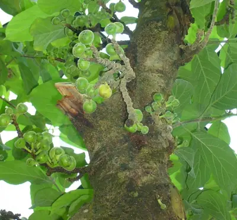

pranet · 出典付きの植物図鑑
フィクス・イスピーダ ☠
Ficus hispida L.f. · Moraceae

Ficus hispida, also known as the opposite leaf Fig, is a small tree in the family Moraceae, with a distribution ranging from India and southern China southwards to northern Australia. It is morphologically gynodioecious, but functionally dioecious. Male trees are hermaphrodites with both staminate flowers that produce pollen and pistillate flowers that produce almost no seeds but can form galls containing pollinator wasp larvae. Female trees have pistillate flowers that do produce seeds but are inhospitable to pollinator wasp larvae.
出典: Wikipedia 英語版「Ficus hispida」 · CC BY-SA 4.0
異名: Covellia assamica Miq., Covellia courtallensis Miq., Covellia daemonum (J.Koenig ex Vahl) Miq., Covellia dasycarpa Miq., Covellia hispida (L.f.) Miq., Covellia oppositifolia (Roxb.) Gasp., Covellia setulosa Miq., Covellia wightiana Miq., Ficus compressa S.S.Chang, Ficus daemona Vahl, Ficus fecunda Blume, Ficus hispidioides S.Moore, Ficus letaqui H.Lév. & Vaniot, Ficus lima Royen ex Miq., Ficus mollis Willd., Ficus oppositifolia Willd., Ficus perinteregam Pennant, Ficus poilanei Gagnep., Ficus prominens Wall. & Miq., Ficus sambucixylon H.Lév.
同定や利用は自己責任でお願いします。この図鑑だけを根拠に野生の植物を食べないでください。
出典
- 学名: World Flora Online Plant List 2026-06 · CC0 1.0
- 名前: Wikipedia の記事名と Wikidata · CC0 1.0（Wikidata）。記事名は事実
- 説明: Wikipedia 英語版「Ficus hispida」 · CC BY-SA 4.0
- 食用・毒性: World Checklist of Useful Plant Species (Diazgranados et al. 2020, RBG Kew) · CC BY 4.0
- 分布: World Checklist of Vascular Plants (WCVP), RBG Kew, version 2026-06-04 · CC BY 3.0
このページは pranet のデータから自動生成しています。コードは MIT、データは項目ごとのライセンス（説明）。